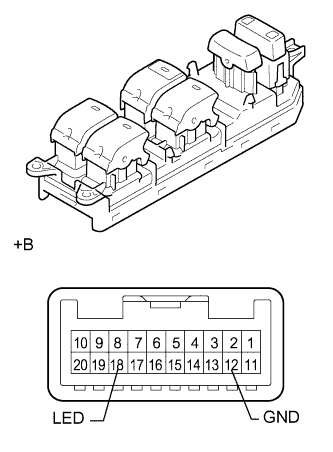
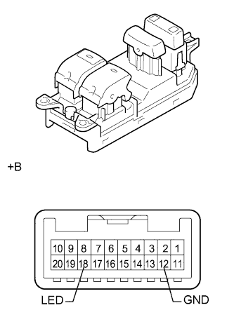

ГЛАВНЫЙ ВЫКЛЮЧАТЕЛЬ ЭЛЕКТРИЧЕСКИХ СТЕКЛОПОДЪЕМНИКОВ > ПРОВЕРКА |
| 1. ПРОВЕРЬТЕ ГЛАВНЫЙ ПЕРЕКЛЮЧАТЕЛЬ СЕТИ МУЛЬТИПЛЕКСНОЙ СВЯЗИ (для 5-дверных моделей) |
|  |
Проверьте, горит ли светодиод.
Подайте напряжение аккумуляторной батареи на главный переключатель и убедитесь, что светодиод включается.
| Условия измерений | Заданные условия |
| Положительный (+) вывод аккумуляторной батареи → контакт 18 (LED) Отрицательный (-) вывод аккумуляторной батареи → контакт 12 (GND) | Светодиод светится |
| *a | Устройство с неподсоединенным жгутом проводов (главный переключатель сети мультиплексной связи в сборе) |
| 2. ПРОВЕРЬТЕ ГЛАВНЫЙ ПЕРЕКЛЮЧАТЕЛЬ СЕТИ МУЛЬТИПЛЕКСНОЙ СВЯЗИ (для 3-дверных моделей) |
|  |
Проверьте, горит ли светодиод.
Подайте напряжение аккумуляторной батареи на главный переключатель и убедитесь, что светодиод включается.
| Условия измерений | Заданные условия |
| Положительный (+) вывод аккумуляторной батареи → контакт 18 (LED) Отрицательный (-) вывод аккумуляторной батареи → контакт 12 (GND) | Светодиод горит |
| *a | Устройство с неподсоединенным жгутом проводов (главный переключатель сети мультиплексной связи в сборе) |